This page re-runs LightGlue/SuperPoint matching for selected accepted frames. Green lines are RANSAC inlier matches. SAT frames use query IPM warp vs satellite mosaic. VPR_FALLBACK frames use query frame vs selected reference video frame.
Source CSV: outputs\hybrid\satellite_first_v17_refs_v11_v12_v13_v14.csv
Smoothed CSV: outputs\hybrid\satellite_first_v17_refs_v11_v12_v13_v14_smoothed.csv
Descriptor cache: outputs\anyloc\dji_mini3_cross_v11_v12_v13_v14_to_v17_1fps_descriptors.npy
Accepted by SAT stage because satellite matching returned sat_status=ok after homography/RANSAC.
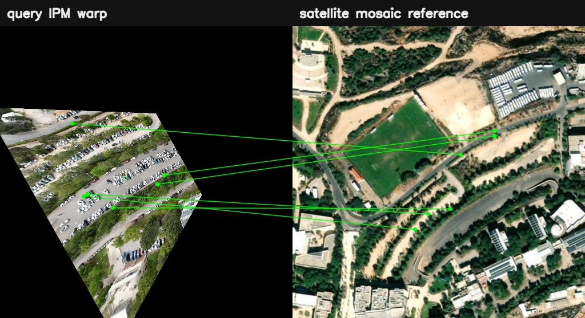
| frame_count | 9412 |
|---|---|
| error_m | 198.496 |
| source | SAT |
| accepted_reason | Accepted by SAT stage because satellite matching returned sat_status=ok after homography/RANSAC. |
| sat_status | ok |
| sat_inliers_original | 8 |
| vpr_triggered | False |
| vpr_best_inliers_original | 0 |
| vpr_best_ratio_original | 0.0 |
| debug_type | SAT |
| reference_image | satellite mosaic |
| reference_source | data/satellite mosaic |
| reference_frame | |
| reference_path | |
| raw_matches_recomputed | 56 |
| ransac_inliers_recomputed | 6 |
| inlier_ratio_recomputed | 0.107 |
| drawn_lines | 6 |
| start_seconds | 314.012 |
| frame_path | data\processed\frames_v17_1fps\frame_000315.jpg |
| rel_alt_m | 49.7 |
| heading_deg | 240.53032940834584 |
| gt_lat | 32.10475936 |
| gt_lon | 35.20962814 |
| smoothed_lat | 32.10604737 |
| smoothed_lon | 35.21108388 |
| raw_final_lat | 32.105854 |
| raw_final_lon | 35.210094 |
| recomputed_lat | None |
| recomputed_lon | None |
Accepted by SAT stage because satellite matching returned sat_status=ok after homography/RANSAC.
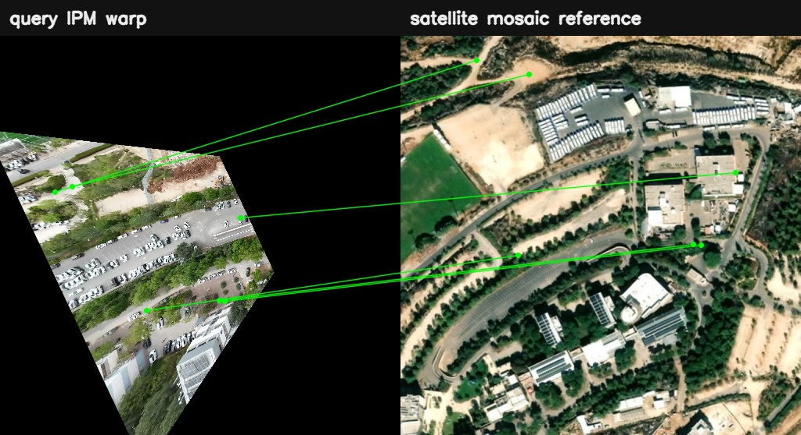
| frame_count | 9172 |
|---|---|
| error_m | 151.442 |
| source | SAT |
| accepted_reason | Accepted by SAT stage because satellite matching returned sat_status=ok after homography/RANSAC. |
| sat_status | ok |
| sat_inliers_original | 8 |
| vpr_triggered | False |
| vpr_best_inliers_original | 0 |
| vpr_best_ratio_original | 0.0 |
| debug_type | SAT |
| reference_image | satellite mosaic |
| reference_source | data/satellite mosaic |
| reference_frame | |
| reference_path | |
| raw_matches_recomputed | 47 |
| ransac_inliers_recomputed | 6 |
| inlier_ratio_recomputed | 0.128 |
| drawn_lines | 6 |
| start_seconds | 306.004 |
| frame_path | data\processed\frames_v17_1fps\frame_000307.jpg |
| rel_alt_m | 49.8 |
| heading_deg | 244.90895627276916 |
| gt_lat | 32.10514929 |
| gt_lon | 35.21043572 |
| smoothed_lat | 32.10593192 |
| smoothed_lon | 35.21174939 |
| raw_final_lat | 32.10624 |
| raw_final_lon | 35.21207 |
| recomputed_lat | None |
| recomputed_lon | None |
Accepted by SAT stage because satellite matching returned sat_status=ok after homography/RANSAC.
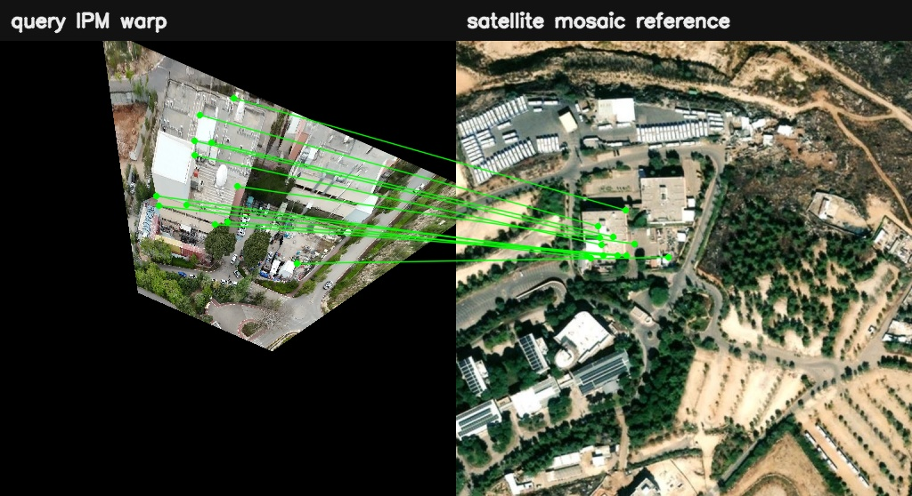
| frame_count | 8722 |
|---|---|
| error_m | 133.985 |
| source | SAT |
| accepted_reason | Accepted by SAT stage because satellite matching returned sat_status=ok after homography/RANSAC. |
| sat_status | ok |
| sat_inliers_original | 9 |
| vpr_triggered | False |
| vpr_best_inliers_original | 0 |
| vpr_best_ratio_original | 0.0 |
| debug_type | SAT |
| reference_image | satellite mosaic |
| reference_source | data/satellite mosaic |
| reference_frame | |
| reference_path | |
| raw_matches_recomputed | 45 |
| ransac_inliers_recomputed | 12 |
| inlier_ratio_recomputed | 0.267 |
| drawn_lines | 12 |
| start_seconds | 290.989 |
| frame_path | data\processed\frames_v17_1fps\frame_000292.jpg |
| rel_alt_m | 49.8 |
| heading_deg | 23.660817894544778 |
| gt_lat | 32.10514175 |
| gt_lon | 35.21161694 |
| smoothed_lat | 32.10452298 |
| smoothed_lon | 35.21039820 |
| raw_final_lat | 32.105324 |
| raw_final_lon | 35.21135 |
| recomputed_lat | 32.10531 |
| recomputed_lon | 35.21137 |
Accepted by VPR fallback because satellite matching failed, then the retrieved reference frame passed the VPR inlier/ratio gate.
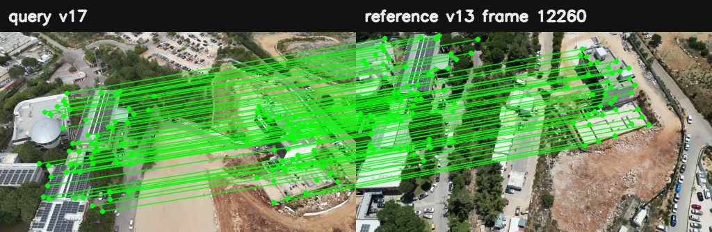
| frame_count | 6235 |
|---|---|
| error_m | 128.457 |
| source | VPR_FALLBACK |
| accepted_reason | Accepted by VPR fallback because satellite matching failed, then the retrieved reference frame passed the VPR inlier/ratio gate. |
| sat_status | ransac_fail |
| sat_inliers_original | 0 |
| vpr_triggered | True |
| vpr_best_inliers_original | 120 |
| vpr_best_ratio_original | 0.789 |
| debug_type | VPR_FALLBACK |
| reference_image | reference video frame |
| reference_source | v13 |
| reference_frame | 12260 |
| reference_path | data\processed\frames_v13_1fps\frame_000410.jpg |
| raw_matches_recomputed | 152 |
| ransac_inliers_recomputed | 120 |
| inlier_ratio_recomputed | 0.789 |
| drawn_lines | 90 |
| start_seconds | 208.007 |
| frame_path | data\processed\frames_v17_1fps\frame_000209.jpg |
| rel_alt_m | 119.8 |
| heading_deg | 64.52954454053378 |
| gt_lat | 32.10406281 |
| gt_lon | 35.21131296 |
| smoothed_lat | 32.10341928 |
| smoothed_lon | 35.21018220 |
| raw_final_lat | 32.10373575461939 |
| raw_final_lon | 35.21088707448921 |
| recomputed_lat | 32.10373575461939 |
| recomputed_lon | 35.21088707448921 |
Accepted by SAT stage because satellite matching returned sat_status=ok after homography/RANSAC.
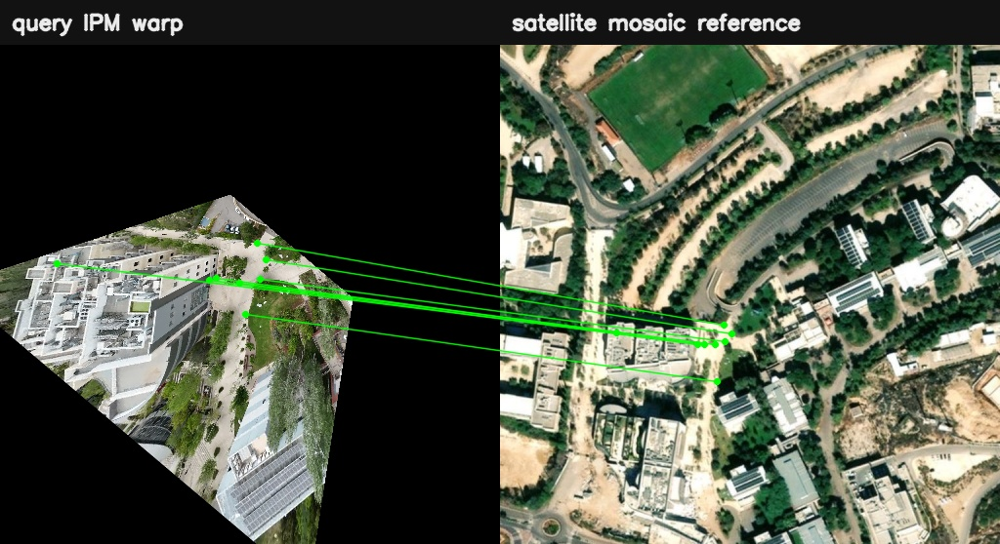
| frame_count | 10071 |
|---|---|
| error_m | 120.168 |
| source | SAT |
| accepted_reason | Accepted by SAT stage because satellite matching returned sat_status=ok after homography/RANSAC. |
| sat_status | ok |
| sat_inliers_original | 9 |
| vpr_triggered | False |
| vpr_best_inliers_original | 0 |
| vpr_best_ratio_original | 0.0 |
| debug_type | SAT |
| reference_image | satellite mosaic |
| reference_source | data/satellite mosaic |
| reference_frame | |
| reference_path | |
| raw_matches_recomputed | 56 |
| ransac_inliers_recomputed | 8 |
| inlier_ratio_recomputed | 0.143 |
| drawn_lines | 8 |
| start_seconds | 336.001 |
| frame_path | data\processed\frames_v17_1fps\frame_000337.jpg |
| rel_alt_m | 49.8 |
| heading_deg | 220.26785468033978 |
| gt_lat | 32.10375365 |
| gt_lon | 35.20903965 |
| smoothed_lat | 32.10476407 |
| smoothed_lon | 35.20948815 |
| raw_final_lat | 32.10367 |
| raw_final_lon | 35.20888 |
| recomputed_lat | 32.103672 |
| recomputed_lon | 35.208885 |
Accepted by VPR fallback because satellite matching failed, then the retrieved reference frame passed the VPR inlier/ratio gate.
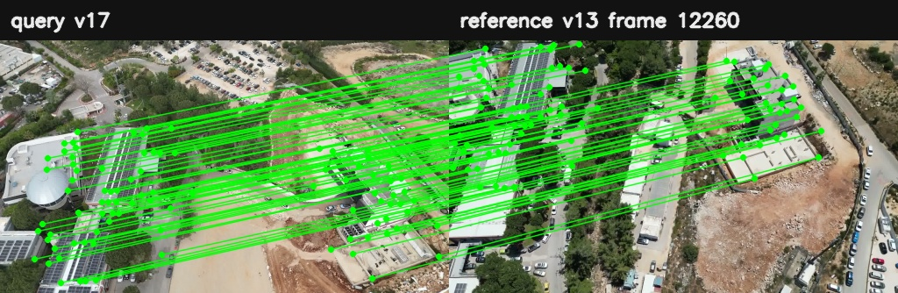
| frame_count | 6265 |
|---|---|
| error_m | 87.745 |
| source | VPR_FALLBACK |
| accepted_reason | Accepted by VPR fallback because satellite matching failed, then the retrieved reference frame passed the VPR inlier/ratio gate. |
| sat_status | ransac_fail |
| sat_inliers_original | 0 |
| vpr_triggered | True |
| vpr_best_inliers_original | 119 |
| vpr_best_ratio_original | 0.826 |
| debug_type | VPR_FALLBACK |
| reference_image | reference video frame |
| reference_source | v13 |
| reference_frame | 12260 |
| reference_path | data\processed\frames_v13_1fps\frame_000410.jpg |
| raw_matches_recomputed | 144 |
| ransac_inliers_recomputed | 119 |
| inlier_ratio_recomputed | 0.826 |
| drawn_lines | 90 |
| start_seconds | 209.008 |
| frame_path | data\processed\frames_v17_1fps\frame_000210.jpg |
| rel_alt_m | 119.9 |
| heading_deg | 64.52954453961638 |
| gt_lat | 32.10410919 |
| gt_lon | 35.21142791 |
| smoothed_lat | 32.10364207 |
| smoothed_lon | 35.21067841 |
| raw_final_lat | 32.10373575461939 |
| raw_final_lon | 35.21088707448921 |
| recomputed_lat | 32.10373575461939 |
| recomputed_lon | 35.21088707448921 |
Accepted by SAT stage because satellite matching returned sat_status=ok after homography/RANSAC.
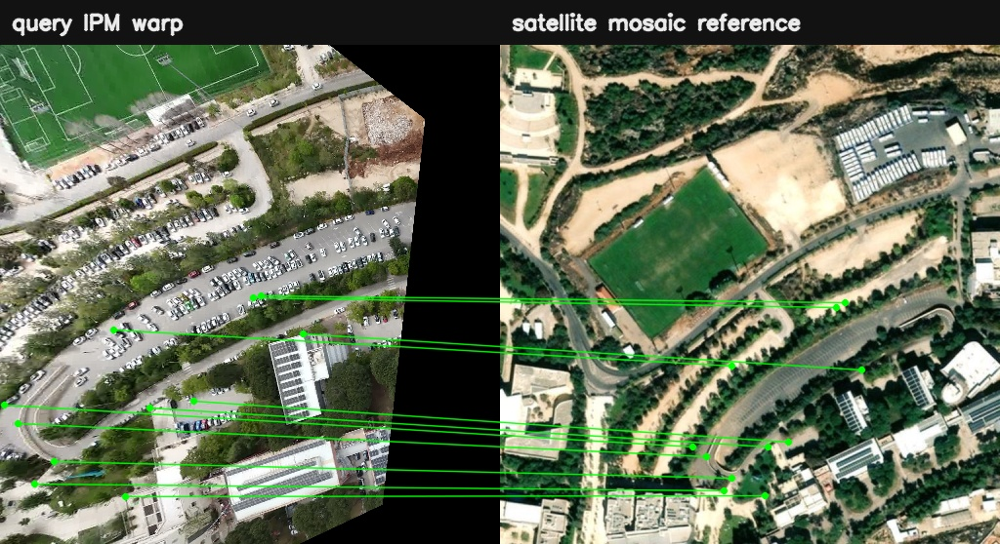
| frame_count | 6774 |
|---|---|
| error_m | 78.171 |
| source | SAT |
| accepted_reason | Accepted by SAT stage because satellite matching returned sat_status=ok after homography/RANSAC. |
| sat_status | ok |
| sat_inliers_original | 9 |
| vpr_triggered | False |
| vpr_best_inliers_original | 0 |
| vpr_best_ratio_original | 0.0 |
| debug_type | SAT |
| reference_image | satellite mosaic |
| reference_source | data/satellite mosaic |
| reference_frame | |
| reference_path | |
| raw_matches_recomputed | 72 |
| ransac_inliers_recomputed | 11 |
| inlier_ratio_recomputed | 0.153 |
| drawn_lines | 11 |
| start_seconds | 225.992 |
| frame_path | data\processed\frames_v17_1fps\frame_000227.jpg |
| rel_alt_m | 120.4 |
| heading_deg | 276.27994523078223 |
| gt_lat | 32.10487031 |
| gt_lon | 35.20973586 |
| smoothed_lat | 32.10539355 |
| smoothed_lon | 35.21028875 |
| raw_final_lat | 32.104996 |
| raw_final_lon | 35.210175 |
| recomputed_lat | 32.105217 |
| recomputed_lon | 35.209824 |
Accepted by VPR fallback because satellite matching failed, then the retrieved reference frame passed the VPR inlier/ratio gate.
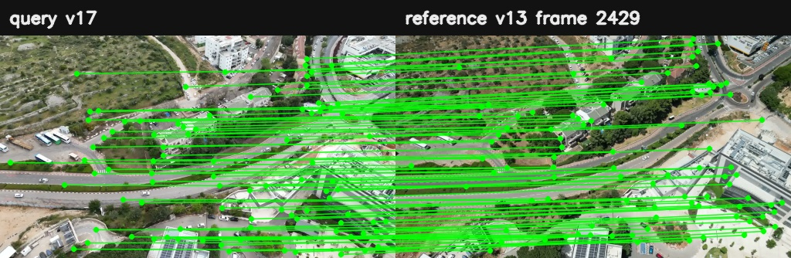
| frame_count | 990 |
|---|---|
| error_m | 75.250 |
| source | VPR_FALLBACK |
| accepted_reason | Accepted by VPR fallback because satellite matching failed, then the retrieved reference frame passed the VPR inlier/ratio gate. |
| sat_status | ransac_fail |
| sat_inliers_original | 0 |
| vpr_triggered | True |
| vpr_best_inliers_original | 181 |
| vpr_best_ratio_original | 0.887 |
| debug_type | VPR_FALLBACK |
| reference_image | reference video frame |
| reference_source | v13 |
| reference_frame | 2429 |
| reference_path | data\processed\frames_v13_1fps\frame_000082.jpg |
| raw_matches_recomputed | 204 |
| ransac_inliers_recomputed | 181 |
| inlier_ratio_recomputed | 0.887 |
| drawn_lines | 90 |
| start_seconds | 32.999 |
| frame_path | data\processed\frames_v17_1fps\frame_000034.jpg |
| rel_alt_m | 119.8 |
| heading_deg | 272.8159702979674 |
| gt_lat | 32.10268987 |
| gt_lon | 35.2084621 |
| smoothed_lat | 32.10222527 |
| smoothed_lon | 35.20904175 |
| raw_final_lat | 32.10222527143475 |
| raw_final_lon | 35.20904174936344 |
| recomputed_lat | 32.10222527143475 |
| recomputed_lon | 35.20904174936344 |
Accepted by SAT stage because satellite matching returned sat_status=ok after homography/RANSAC.
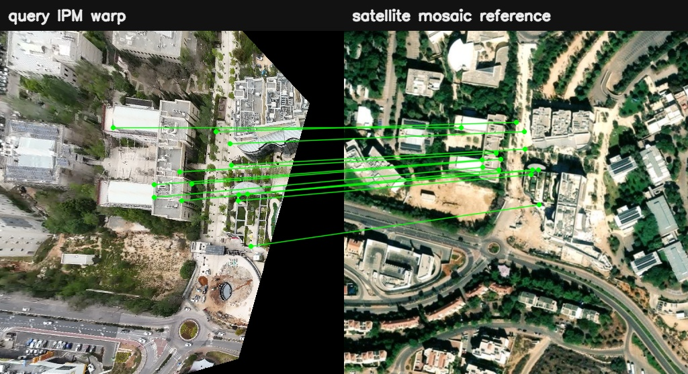
| frame_count | 1380 |
|---|---|
| error_m | 69.680 |
| source | SAT |
| accepted_reason | Accepted by SAT stage because satellite matching returned sat_status=ok after homography/RANSAC. |
| sat_status | ok |
| sat_inliers_original | 9 |
| vpr_triggered | False |
| vpr_best_inliers_original | 0 |
| vpr_best_ratio_original | 0.0 |
| debug_type | SAT |
| reference_image | satellite mosaic |
| reference_source | data/satellite mosaic |
| reference_frame | |
| reference_path | |
| raw_matches_recomputed | 68 |
| ransac_inliers_recomputed | 13 |
| inlier_ratio_recomputed | 0.191 |
| drawn_lines | 13 |
| start_seconds | 46.012 |
| frame_path | data\processed\frames_v17_1fps\frame_000047.jpg |
| rel_alt_m | 119.8 |
| heading_deg | 285.54277189980417 |
| gt_lat | 32.10310937 |
| gt_lon | 35.20763902 |
| smoothed_lat | 32.10274565 |
| smoothed_lon | 35.20824040 |
| raw_final_lat | 32.103268 |
| raw_final_lon | 35.207436 |
| recomputed_lat | 32.103256 |
| recomputed_lon | 35.207462 |
Accepted by VPR fallback because satellite matching failed, then the retrieved reference frame passed the VPR inlier/ratio gate.
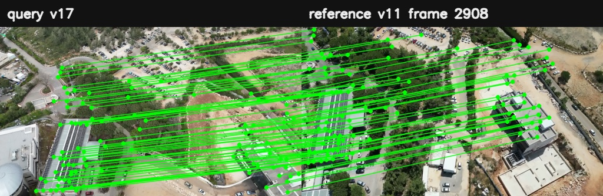
| frame_count | 6355 |
|---|---|
| error_m | 60.218 |
| source | VPR_FALLBACK |
| accepted_reason | Accepted by VPR fallback because satellite matching failed, then the retrieved reference frame passed the VPR inlier/ratio gate. |
| sat_status | ransac_fail |
| sat_inliers_original | 0 |
| vpr_triggered | True |
| vpr_best_inliers_original | 107 |
| vpr_best_ratio_original | 0.799 |
| debug_type | VPR_FALLBACK |
| reference_image | reference video frame |
| reference_source | v11 |
| reference_frame | 2908 |
| reference_path | data\processed\frames_v11_1fps\frame_000098.jpg |
| raw_matches_recomputed | 134 |
| ransac_inliers_recomputed | 107 |
| inlier_ratio_recomputed | 0.799 |
| drawn_lines | 90 |
| start_seconds | 212.011 |
| frame_path | data\processed\frames_v17_1fps\frame_000213.jpg |
| rel_alt_m | 119.9 |
| heading_deg | 64.38611827672241 |
| gt_lat | 32.10425063 |
| gt_lon | 35.21176854 |
| smoothed_lat | 32.10386902 |
| smoothed_lon | 35.21131591 |
| raw_final_lat | 32.103857994990236 |
| raw_final_lon | 35.21138167275019 |
| recomputed_lat | 32.103857994990236 |
| recomputed_lon | 35.21138167275019 |
Accepted by SAT stage because satellite matching returned sat_status=ok after homography/RANSAC.
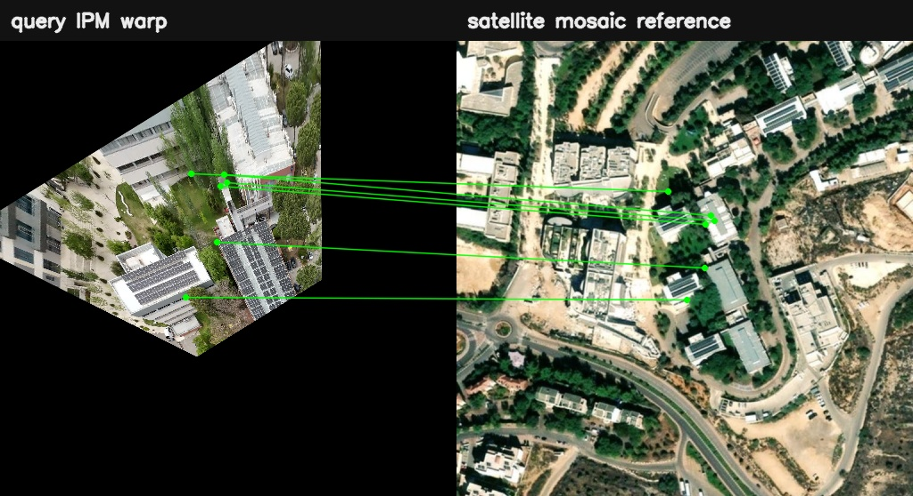
| frame_count | 7703 |
|---|---|
| error_m | 56.470 |
| source | SAT |
| accepted_reason | Accepted by SAT stage because satellite matching returned sat_status=ok after homography/RANSAC. |
| sat_status | ok |
| sat_inliers_original | 8 |
| vpr_triggered | False |
| vpr_best_inliers_original | 0 |
| vpr_best_ratio_original | 0.0 |
| debug_type | SAT |
| reference_image | satellite mosaic |
| reference_source | data/satellite mosaic |
| reference_frame | |
| reference_path | |
| raw_matches_recomputed | 47 |
| ransac_inliers_recomputed | 6 |
| inlier_ratio_recomputed | 0.128 |
| drawn_lines | 6 |
| start_seconds | 256.988 |
| frame_path | data\processed\frames_v17_1fps\frame_000258.jpg |
| rel_alt_m | 49.8 |
| heading_deg | 328.20822692273316 |
| gt_lat | 32.10287124 |
| gt_lon | 35.20940577 |
| smoothed_lat | 32.10236629 |
| smoothed_lon | 35.20934845 |
| raw_final_lat | 32.10274 |
| raw_final_lon | 35.209377 |
| recomputed_lat | None |
| recomputed_lon | None |
Accepted by SAT stage because satellite matching returned sat_status=ok after homography/RANSAC.
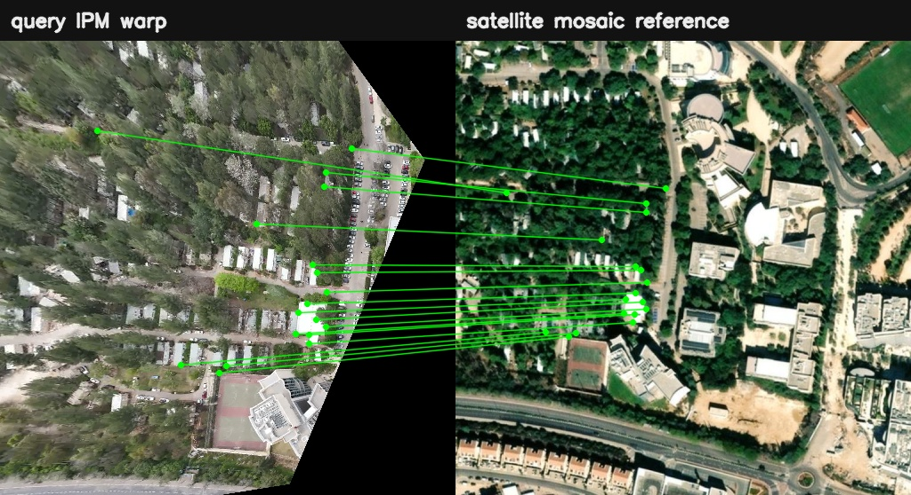
| frame_count | 1919 |
|---|---|
| error_m | 52.704 |
| source | SAT |
| accepted_reason | Accepted by SAT stage because satellite matching returned sat_status=ok after homography/RANSAC. |
| sat_status | ok |
| sat_inliers_original | 12 |
| vpr_triggered | False |
| vpr_best_inliers_original | 0 |
| vpr_best_ratio_original | 0.0 |
| debug_type | SAT |
| reference_image | satellite mosaic |
| reference_source | data/satellite mosaic |
| reference_frame | |
| reference_path | |
| raw_matches_recomputed | 66 |
| ransac_inliers_recomputed | 18 |
| inlier_ratio_recomputed | 0.273 |
| drawn_lines | 18 |
| start_seconds | 63.996 |
| frame_path | data\processed\frames_v17_1fps\frame_000065.jpg |
| rel_alt_m | 119.8 |
| heading_deg | 292.5607091492409 |
| gt_lat | 32.10392289 |
| gt_lon | 35.20582379 |
| smoothed_lat | 32.10418286 |
| smoothed_lon | 35.20535667 |
| raw_final_lat | 32.104305 |
| raw_final_lon | 35.20513 |
| recomputed_lat | 32.104095 |
| recomputed_lon | 35.20543 |
Accepted by VPR fallback because satellite matching failed, then the retrieved reference frame passed the VPR inlier/ratio gate.
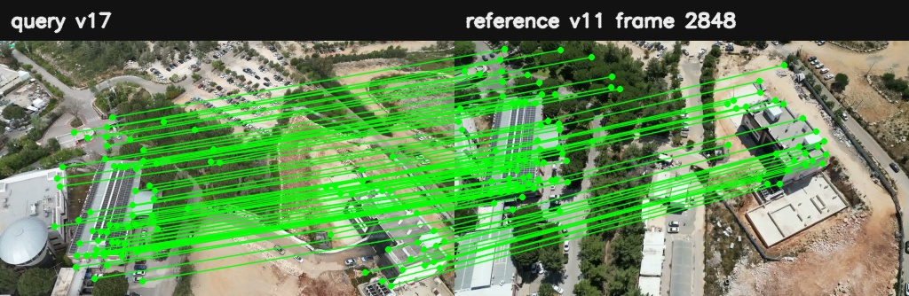
| frame_count | 6325 |
|---|---|
| error_m | 50.424 |
| source | VPR_FALLBACK |
| accepted_reason | Accepted by VPR fallback because satellite matching failed, then the retrieved reference frame passed the VPR inlier/ratio gate. |
| sat_status | ransac_fail |
| sat_inliers_original | 0 |
| vpr_triggered | True |
| vpr_best_inliers_original | 127 |
| vpr_best_ratio_original | 0.87 |
| debug_type | VPR_FALLBACK |
| reference_image | reference video frame |
| reference_source | v11 |
| reference_frame | 2848 |
| reference_path | data\processed\frames_v11_1fps\frame_000096.jpg |
| raw_matches_recomputed | 146 |
| ransac_inliers_recomputed | 127 |
| inlier_ratio_recomputed | 0.87 |
| drawn_lines | 90 |
| start_seconds | 211.01 |
| frame_path | data\processed\frames_v17_1fps\frame_000212.jpg |
| rel_alt_m | 119.9 |
| heading_deg | 64.28823770776063 |
| gt_lat | 32.10420528 |
| gt_lon | 35.2116536 |
| smoothed_lat | 32.10390376 |
| smoothed_lon | 35.21125456 |
| raw_final_lat | 32.10380684486926 |
| raw_final_lon | 35.21117808670122 |
| recomputed_lat | 32.10380684486926 |
| recomputed_lon | 35.21117808670122 |
Accepted by SAT stage because satellite matching returned sat_status=ok after homography/RANSAC.
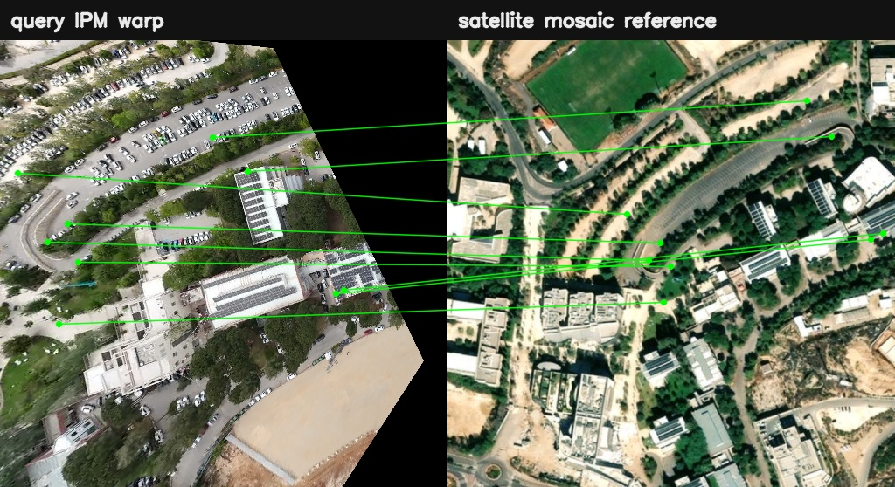
| frame_count | 6804 |
|---|---|
| error_m | 50.411 |
| source | SAT |
| accepted_reason | Accepted by SAT stage because satellite matching returned sat_status=ok after homography/RANSAC. |
| sat_status | ok |
| sat_inliers_original | 8 |
| vpr_triggered | False |
| vpr_best_inliers_original | 0 |
| vpr_best_ratio_original | 0.0 |
| debug_type | SAT |
| reference_image | satellite mosaic |
| reference_source | data/satellite mosaic |
| reference_frame | |
| reference_path | |
| raw_matches_recomputed | 86 |
| ransac_inliers_recomputed | 9 |
| inlier_ratio_recomputed | 0.105 |
| drawn_lines | 9 |
| start_seconds | 226.993 |
| frame_path | data\processed\frames_v17_1fps\frame_000228.jpg |
| rel_alt_m | 120.3 |
| heading_deg | 244.37861367858466 |
| gt_lat | 32.10427569 |
| gt_lon | 35.20979871 |
| smoothed_lat | 32.10467731 |
| smoothed_lon | 35.21004570 |
| raw_final_lat | 32.10412 |
| raw_final_lon | 35.209854 |
| recomputed_lat | 32.104282 |
| recomputed_lon | 35.21009 |
Accepted by SAT stage because satellite matching returned sat_status=ok after homography/RANSAC.
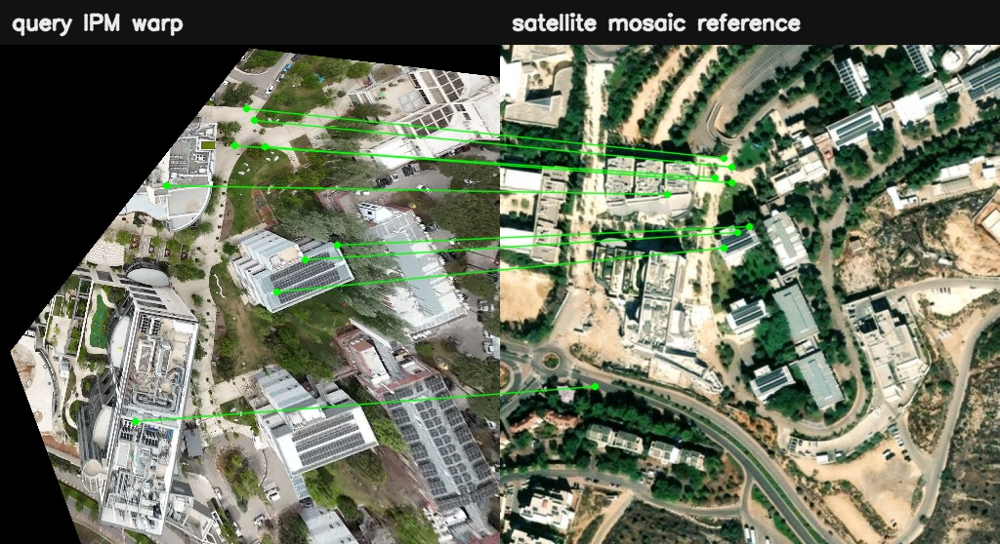
| frame_count | 5575 |
|---|---|
| error_m | 50.136 |
| source | SAT |
| accepted_reason | Accepted by SAT stage because satellite matching returned sat_status=ok after homography/RANSAC. |
| sat_status | ok |
| sat_inliers_original | 8 |
| vpr_triggered | False |
| vpr_best_inliers_original | 0 |
| vpr_best_ratio_original | 0.0 |
| debug_type | SAT |
| reference_image | satellite mosaic |
| reference_source | data/satellite mosaic |
| reference_frame | |
| reference_path | |
| raw_matches_recomputed | 75 |
| ransac_inliers_recomputed | 9 |
| inlier_ratio_recomputed | 0.12 |
| drawn_lines | 9 |
| start_seconds | 185.985 |
| frame_path | data\processed\frames_v17_1fps\frame_000187.jpg |
| rel_alt_m | 119.9 |
| heading_deg | 128.2027818430904 |
| gt_lat | 32.10322888 |
| gt_lon | 35.20894317 |
| smoothed_lat | 32.10360447 |
| smoothed_lon | 35.20864974 |
| raw_final_lat | 32.103184 |
| raw_final_lon | 35.208828 |
| recomputed_lat | 32.103218 |
| recomputed_lon | 35.2088 |
Accepted by VPR fallback because satellite matching failed, then the retrieved reference frame passed the VPR inlier/ratio gate.
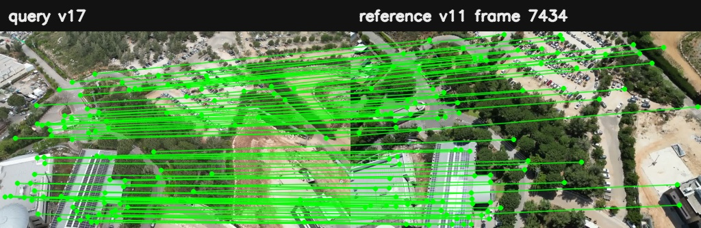
| frame_count | 6385 |
|---|---|
| error_m | 48.177 |
| source | VPR_FALLBACK |
| accepted_reason | Accepted by VPR fallback because satellite matching failed, then the retrieved reference frame passed the VPR inlier/ratio gate. |
| sat_status | ransac_fail |
| sat_inliers_original | 0 |
| vpr_triggered | True |
| vpr_best_inliers_original | 125 |
| vpr_best_ratio_original | 0.801 |
| debug_type | VPR_FALLBACK |
| reference_image | reference video frame |
| reference_source | v11 |
| reference_frame | 7434 |
| reference_path | data\processed\frames_v11_1fps\frame_000249.jpg |
| raw_matches_recomputed | 156 |
| ransac_inliers_recomputed | 125 |
| inlier_ratio_recomputed | 0.801 |
| drawn_lines | 90 |
| start_seconds | 213.012 |
| frame_path | data\processed\frames_v17_1fps\frame_000214.jpg |
| rel_alt_m | 119.9 |
| heading_deg | 62.36882760558649 |
| gt_lat | 32.10433053 |
| gt_lon | 35.21186348 |
| smoothed_lat | 32.10406596 |
| smoothed_lon | 35.21145916 |
| raw_final_lat | 32.10427664253524 |
| raw_final_lon | 35.21158331208797 |
| recomputed_lat | 32.10427664253524 |
| recomputed_lon | 35.21158331208797 |
Accepted by SAT stage because satellite matching returned sat_status=ok after homography/RANSAC.
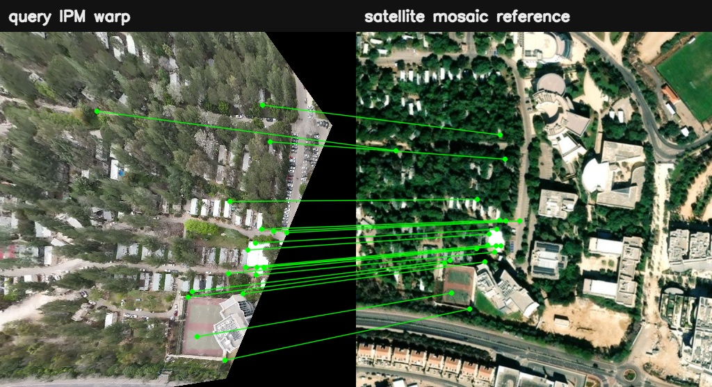
| frame_count | 1949 |
|---|---|
| error_m | 47.057 |
| source | SAT |
| accepted_reason | Accepted by SAT stage because satellite matching returned sat_status=ok after homography/RANSAC. |
| sat_status | ok |
| sat_inliers_original | 17 |
| vpr_triggered | False |
| vpr_best_inliers_original | 0 |
| vpr_best_ratio_original | 0.0 |
| debug_type | SAT |
| reference_image | satellite mosaic |
| reference_source | data/satellite mosaic |
| reference_frame | |
| reference_path | |
| raw_matches_recomputed | 65 |
| ransac_inliers_recomputed | 19 |
| inlier_ratio_recomputed | 0.292 |
| drawn_lines | 19 |
| start_seconds | 64.997 |
| frame_path | data\processed\frames_v17_1fps\frame_000066.jpg |
| rel_alt_m | 119.8 |
| heading_deg | 292.7047077580763 |
| gt_lat | 32.10396739 |
| gt_lon | 35.20570602 |
| smoothed_lat | 32.10419281 |
| smoothed_lon | 35.20528387 |
| raw_final_lat | 32.10415 |
| raw_final_lon | 35.20531 |
| recomputed_lat | 32.10413 |
| recomputed_lon | 35.205303 |
Accepted by SAT stage because satellite matching returned sat_status=ok after homography/RANSAC.
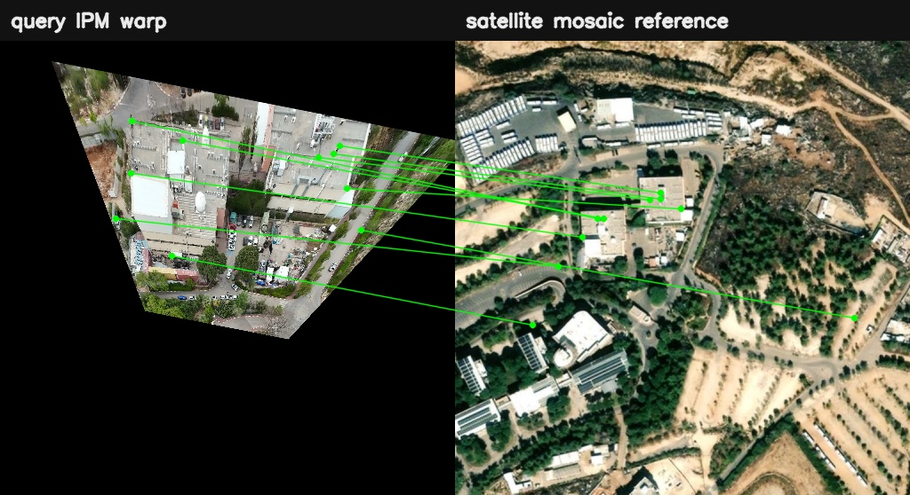
| frame_count | 8752 |
|---|---|
| error_m | 44.993 |
| source | SAT |
| accepted_reason | Accepted by SAT stage because satellite matching returned sat_status=ok after homography/RANSAC. |
| sat_status | ok |
| sat_inliers_original | 13 |
| vpr_triggered | False |
| vpr_best_inliers_original | 0 |
| vpr_best_ratio_original | 0.0 |
| debug_type | SAT |
| reference_image | satellite mosaic |
| reference_source | data/satellite mosaic |
| reference_frame | |
| reference_path | |
| raw_matches_recomputed | 80 |
| ransac_inliers_recomputed | 10 |
| inlier_ratio_recomputed | 0.125 |
| drawn_lines | 10 |
| start_seconds | 291.99 |
| frame_path | data\processed\frames_v17_1fps\frame_000293.jpg |
| rel_alt_m | 49.8 |
| heading_deg | 11.108547135075469 |
| gt_lat | 32.10524398 |
| gt_lon | 35.21152675 |
| smoothed_lat | 32.10507989 |
| smoothed_lon | 35.21109070 |
| raw_final_lat | 32.10531 |
| raw_final_lon | 35.211395 |
| recomputed_lat | 32.104023 |
| recomputed_lon | 35.210308 |
Accepted by SAT stage because satellite matching returned sat_status=ok after homography/RANSAC.
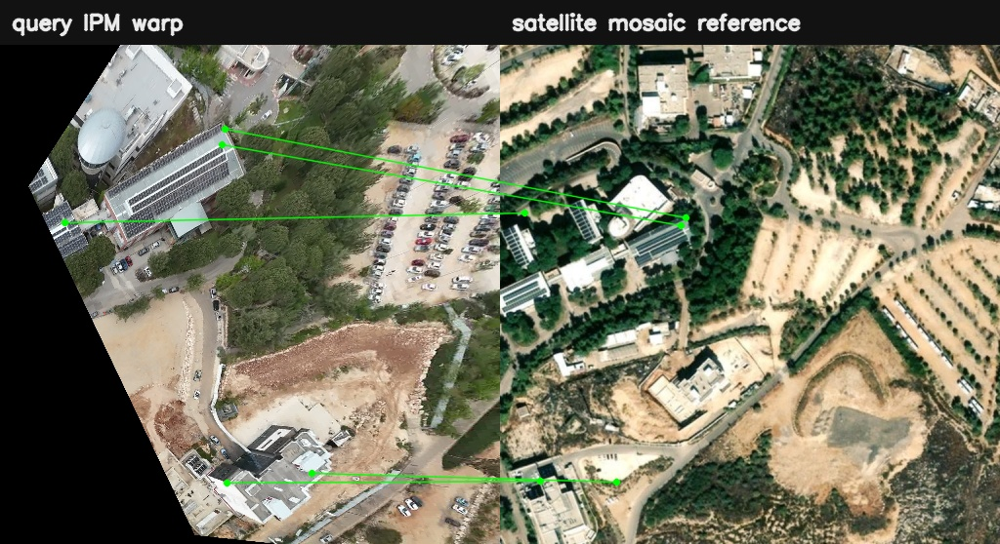
| frame_count | 6295 |
|---|---|
| error_m | 44.305 |
| source | SAT |
| accepted_reason | Accepted by SAT stage because satellite matching returned sat_status=ok after homography/RANSAC. |
| sat_status | ok |
| sat_inliers_original | 9 |
| vpr_triggered | False |
| vpr_best_inliers_original | 0 |
| vpr_best_ratio_original | 0.0 |
| debug_type | SAT |
| reference_image | satellite mosaic |
| reference_source | data/satellite mosaic |
| reference_frame | |
| reference_path | |
| raw_matches_recomputed | 41 |
| ransac_inliers_recomputed | 5 |
| inlier_ratio_recomputed | 0.122 |
| drawn_lines | 5 |
| start_seconds | 210.009 |
| frame_path | data\processed\frames_v17_1fps\frame_000211.jpg |
| rel_alt_m | 119.9 |
| heading_deg | 64.52954453899576 |
| gt_lat | 32.10415519 |
| gt_lon | 35.21154191 |
| smoothed_lat | 32.10390995 |
| smoothed_lon | 35.21117186 |
| raw_final_lat | 32.104115 |
| raw_final_lon | 35.211525 |
| recomputed_lat | None |
| recomputed_lon | None |
Accepted by VPR fallback because satellite matching failed, then the retrieved reference frame passed the VPR inlier/ratio gate.
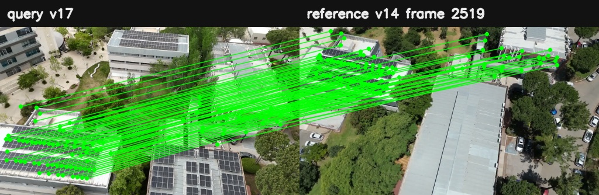
| frame_count | 7793 |
|---|---|
| error_m | 42.224 |
| source | VPR_FALLBACK |
| accepted_reason | Accepted by VPR fallback because satellite matching failed, then the retrieved reference frame passed the VPR inlier/ratio gate. |
| sat_status | ransac_fail |
| sat_inliers_original | 0 |
| vpr_triggered | True |
| vpr_best_inliers_original | 108 |
| vpr_best_ratio_original | 0.915 |
| debug_type | VPR_FALLBACK |
| reference_image | reference video frame |
| reference_source | v14 |
| reference_frame | 2519 |
| reference_path | data\processed\frames_v14_1fps\frame_000085.jpg |
| raw_matches_recomputed | 118 |
| ransac_inliers_recomputed | 108 |
| inlier_ratio_recomputed | 0.915 |
| drawn_lines | 90 |
| start_seconds | 259.991 |
| frame_path | data\processed\frames_v17_1fps\frame_000261.jpg |
| rel_alt_m | 49.8 |
| heading_deg | 330.36644985083296 |
| gt_lat | 32.10302685 |
| gt_lon | 35.20931988 |
| smoothed_lat | 32.10286563 |
| smoothed_lon | 35.20972518 |
| raw_final_lat | 32.102899914201025 |
| raw_final_lon | 35.20979400351326 |
| recomputed_lat | 32.102899914201025 |
| recomputed_lon | 35.20979400351326 |
Accepted by SAT stage because satellite matching returned sat_status=ok after homography/RANSAC.
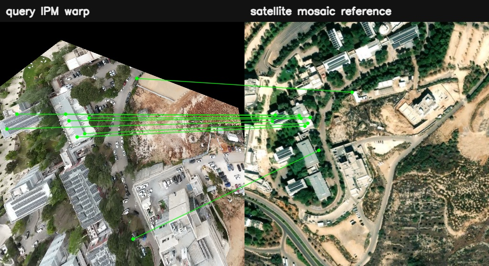
| frame_count | 7104 |
|---|---|
| error_m | 40.252 |
| source | SAT |
| accepted_reason | Accepted by SAT stage because satellite matching returned sat_status=ok after homography/RANSAC. |
| sat_status | ok |
| sat_inliers_original | 10 |
| vpr_triggered | False |
| vpr_best_inliers_original | 0 |
| vpr_best_ratio_original | 0.0 |
| debug_type | SAT |
| reference_image | satellite mosaic |
| reference_source | data/satellite mosaic |
| reference_frame | |
| reference_path | |
| raw_matches_recomputed | 62 |
| ransac_inliers_recomputed | 9 |
| inlier_ratio_recomputed | 0.145 |
| drawn_lines | 9 |
| start_seconds | 237.003 |
| frame_path | data\processed\frames_v17_1fps\frame_000238.jpg |
| rel_alt_m | 120.3 |
| heading_deg | 201.01691159895455 |
| gt_lat | 32.10306722 |
| gt_lon | 35.20994347 |
| smoothed_lat | 32.10339247 |
| smoothed_lon | 35.20975697 |
| raw_final_lat | 32.103146 |
| raw_final_lon | 35.209774 |
| recomputed_lat | 32.103157 |
| recomputed_lon | 35.209785 |
Accepted by SAT stage because satellite matching returned sat_status=ok after homography/RANSAC.
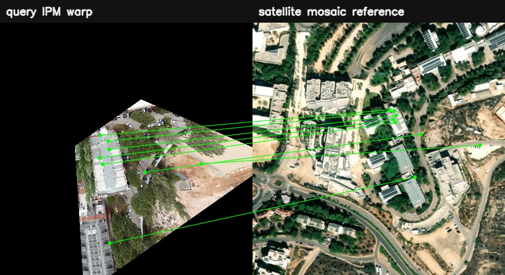
| frame_count | 10401 |
|---|---|
| error_m | 36.995 |
| source | SAT |
| accepted_reason | Accepted by SAT stage because satellite matching returned sat_status=ok after homography/RANSAC. |
| sat_status | ok |
| sat_inliers_original | 9 |
| vpr_triggered | False |
| vpr_best_inliers_original | 0 |
| vpr_best_ratio_original | 0.0 |
| debug_type | SAT |
| reference_image | satellite mosaic |
| reference_source | data/satellite mosaic |
| reference_frame | |
| reference_path | |
| raw_matches_recomputed | 39 |
| ransac_inliers_recomputed | 8 |
| inlier_ratio_recomputed | 0.205 |
| drawn_lines | 8 |
| start_seconds | 347.012 |
| frame_path | data\processed\frames_v17_1fps\frame_000348.jpg |
| rel_alt_m | 49.8 |
| heading_deg | 144.8346610569339 |
| gt_lat | 32.10336629 |
| gt_lon | 35.20954516 |
| smoothed_lat | 32.10350716 |
| smoothed_lon | 35.20918983 |
| raw_final_lat | 32.103424 |
| raw_final_lon | 35.209545 |
| recomputed_lat | 32.103374 |
| recomputed_lon | 35.209526 |
Accepted by SAT stage because satellite matching returned sat_status=ok after homography/RANSAC.
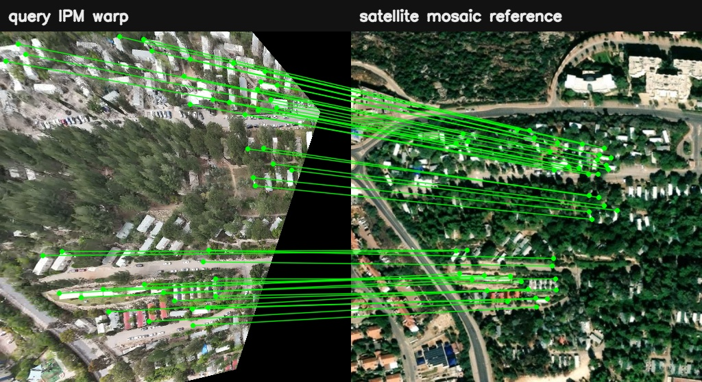
| frame_count | 3178 |
|---|---|
| error_m | 36.811 |
| source | SAT |
| accepted_reason | Accepted by SAT stage because satellite matching returned sat_status=ok after homography/RANSAC. |
| sat_status | ok |
| sat_inliers_original | 24 |
| vpr_triggered | False |
| vpr_best_inliers_original | 0 |
| vpr_best_ratio_original | 0.0 |
| debug_type | SAT |
| reference_image | satellite mosaic |
| reference_source | data/satellite mosaic |
| reference_frame | |
| reference_path | |
| raw_matches_recomputed | 93 |
| ransac_inliers_recomputed | 43 |
| inlier_ratio_recomputed | 0.462 |
| drawn_lines | 43 |
| start_seconds | 106.005 |
| frame_path | data\processed\frames_v17_1fps\frame_000107.jpg |
| rel_alt_m | 119.8 |
| heading_deg | 288.08298403384015 |
| gt_lat | 32.10483604 |
| gt_lon | 35.20404032 |
| smoothed_lat | 32.10508191 |
| smoothed_lon | 35.20377927 |
| raw_final_lat | 32.10505 |
| raw_final_lon | 35.203743 |
| recomputed_lat | 32.10504 |
| recomputed_lon | 35.203743 |
Accepted by SAT stage because satellite matching returned sat_status=ok after homography/RANSAC.
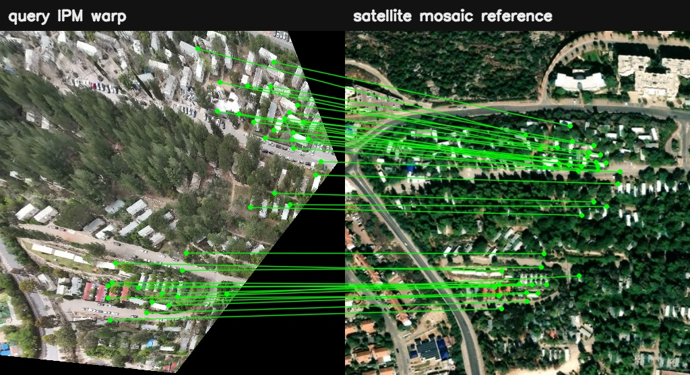
| frame_count | 3148 |
|---|---|
| error_m | 36.386 |
| source | SAT |
| accepted_reason | Accepted by SAT stage because satellite matching returned sat_status=ok after homography/RANSAC. |
| sat_status | ok |
| sat_inliers_original | 23 |
| vpr_triggered | False |
| vpr_best_inliers_original | 0 |
| vpr_best_ratio_original | 0.0 |
| debug_type | SAT |
| reference_image | satellite mosaic |
| reference_source | data/satellite mosaic |
| reference_frame | |
| reference_path | |
| raw_matches_recomputed | 102 |
| ransac_inliers_recomputed | 37 |
| inlier_ratio_recomputed | 0.363 |
| drawn_lines | 37 |
| start_seconds | 105.004 |
| frame_path | data\processed\frames_v17_1fps\frame_000106.jpg |
| rel_alt_m | 119.8 |
| heading_deg | 307.49996435210755 |
| gt_lat | 32.10515514 |
| gt_lon | 35.2042491 |
| smoothed_lat | 32.10517155 |
| smoothed_lon | 35.20386371 |
| raw_final_lat | 32.105034 |
| raw_final_lon | 35.20375 |
| recomputed_lat | 32.105038 |
| recomputed_lon | 35.20375 |
Accepted by SAT stage because satellite matching returned sat_status=ok after homography/RANSAC.
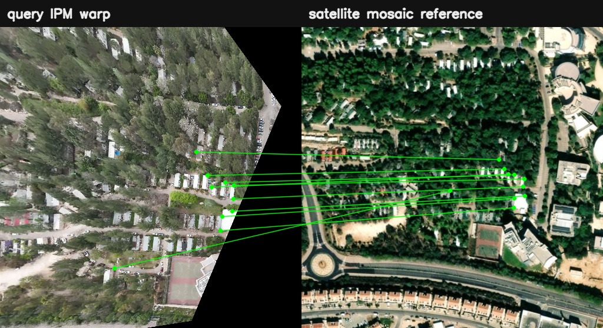
| frame_count | 1979 |
|---|---|
| error_m | 35.962 |
| source | SAT |
| accepted_reason | Accepted by SAT stage because satellite matching returned sat_status=ok after homography/RANSAC. |
| sat_status | ok |
| sat_inliers_original | 9 |
| vpr_triggered | False |
| vpr_best_inliers_original | 0 |
| vpr_best_ratio_original | 0.0 |
| debug_type | SAT |
| reference_image | satellite mosaic |
| reference_source | data/satellite mosaic |
| reference_frame | |
| reference_path | |
| raw_matches_recomputed | 52 |
| ransac_inliers_recomputed | 10 |
| inlier_ratio_recomputed | 0.192 |
| drawn_lines | 10 |
| start_seconds | 65.998 |
| frame_path | data\processed\frames_v17_1fps\frame_000067.jpg |
| rel_alt_m | 119.8 |
| heading_deg | 292.63335893146484 |
| gt_lat | 32.10400815 |
| gt_lon | 35.20558741 |
| smoothed_lat | 32.10419745 |
| smoothed_lon | 35.20527837 |
| raw_final_lat | 32.10421 |
| raw_final_lon | 35.20528 |
| recomputed_lat | 32.10427 |
| recomputed_lon | 35.20538 |
Accepted by SAT stage because satellite matching returned sat_status=ok after homography/RANSAC.
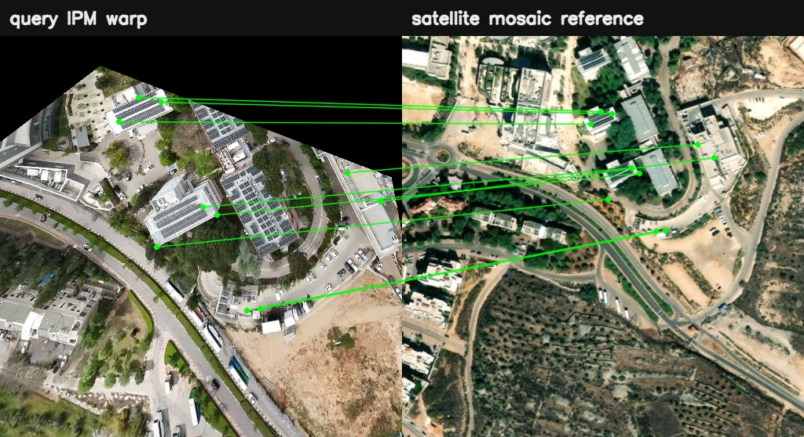
| frame_count | 7374 |
|---|---|
| error_m | 35.382 |
| source | SAT |
| accepted_reason | Accepted by SAT stage because satellite matching returned sat_status=ok after homography/RANSAC. |
| sat_status | ok |
| sat_inliers_original | 8 |
| vpr_triggered | False |
| vpr_best_inliers_original | 0 |
| vpr_best_ratio_original | 0.0 |
| debug_type | SAT |
| reference_image | satellite mosaic |
| reference_source | data/satellite mosaic |
| reference_frame | |
| reference_path | |
| raw_matches_recomputed | 67 |
| ransac_inliers_recomputed | 10 |
| inlier_ratio_recomputed | 0.149 |
| drawn_lines | 10 |
| start_seconds | 246.012 |
| frame_path | data\processed\frames_v17_1fps\frame_000247.jpg |
| rel_alt_m | 120.3 |
| heading_deg | 201.00211027944786 |
| gt_lat | 32.10217812 |
| gt_lon | 35.20954577 |
| smoothed_lat | 32.10243116 |
| smoothed_lon | 35.20931871 |
| raw_final_lat | 32.102085 |
| raw_final_lon | 35.208942 |
| recomputed_lat | 32.1022 |
| recomputed_lon | 35.209415 |
Accepted by SAT stage because satellite matching returned sat_status=ok after homography/RANSAC.
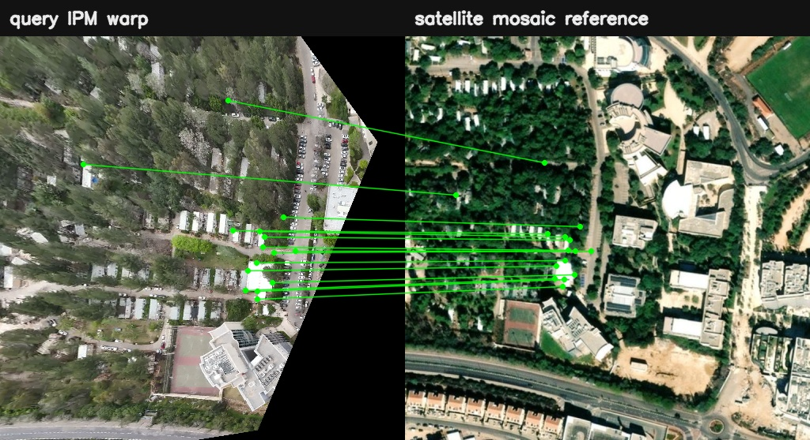
| frame_count | 1889 |
|---|---|
| error_m | 35.070 |
| source | SAT |
| accepted_reason | Accepted by SAT stage because satellite matching returned sat_status=ok after homography/RANSAC. |
| sat_status | ok |
| sat_inliers_original | 16 |
| vpr_triggered | False |
| vpr_best_inliers_original | 0 |
| vpr_best_ratio_original | 0.0 |
| debug_type | SAT |
| reference_image | satellite mosaic |
| reference_source | data/satellite mosaic |
| reference_frame | |
| reference_path | |
| raw_matches_recomputed | 61 |
| ransac_inliers_recomputed | 15 |
| inlier_ratio_recomputed | 0.246 |
| drawn_lines | 15 |
| start_seconds | 62.995 |
| frame_path | data\processed\frames_v17_1fps\frame_000064.jpg |
| rel_alt_m | 119.8 |
| heading_deg | 292.49987790239265 |
| gt_lat | 32.10388183 |
| gt_lon | 35.20593727 |
| smoothed_lat | 32.10404618 |
| smoothed_lon | 35.20561997 |
| raw_final_lat | 32.10408 |
| raw_final_lon | 35.20554 |
| recomputed_lat | 32.104076 |
| recomputed_lon | 35.205544 |
Accepted by SAT stage because satellite matching returned sat_status=ok after homography/RANSAC.
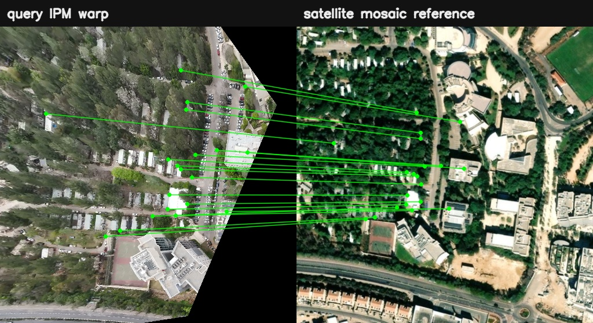
| frame_count | 1859 |
|---|---|
| error_m | 34.767 |
| source | SAT |
| accepted_reason | Accepted by SAT stage because satellite matching returned sat_status=ok after homography/RANSAC. |
| sat_status | ok |
| sat_inliers_original | 15 |
| vpr_triggered | False |
| vpr_best_inliers_original | 0 |
| vpr_best_ratio_original | 0.0 |
| debug_type | SAT |
| reference_image | satellite mosaic |
| reference_source | data/satellite mosaic |
| reference_frame | |
| reference_path | |
| raw_matches_recomputed | 77 |
| ransac_inliers_recomputed | 20 |
| inlier_ratio_recomputed | 0.26 |
| drawn_lines | 20 |
| start_seconds | 61.994 |
| frame_path | data\processed\frames_v17_1fps\frame_000063.jpg |
| rel_alt_m | 119.8 |
| heading_deg | 292.84258897463275 |
| gt_lat | 32.10384777 |
| gt_lon | 35.2060542 |
| smoothed_lat | 32.10400399 |
| smoothed_lon | 35.20573494 |
| raw_final_lat | 32.10402 |
| raw_final_lon | 35.20567 |
| recomputed_lat | 32.104027 |
| recomputed_lon | 35.205666 |
Accepted by SAT stage because satellite matching returned sat_status=ok after homography/RANSAC.
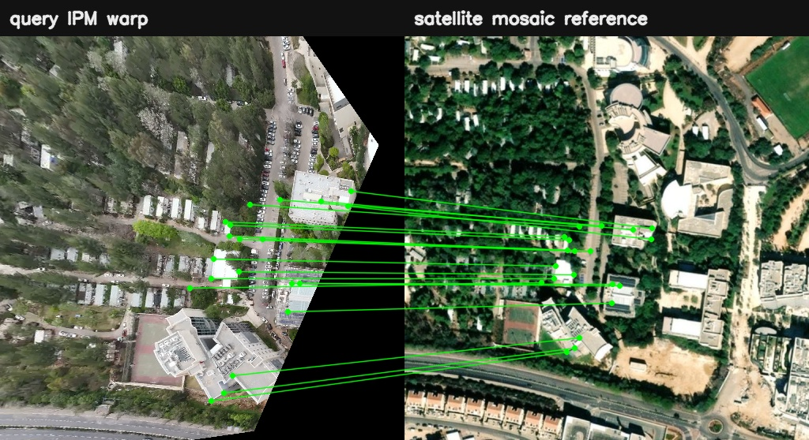
| frame_count | 1829 |
|---|---|
| error_m | 34.717 |
| source | SAT |
| accepted_reason | Accepted by SAT stage because satellite matching returned sat_status=ok after homography/RANSAC. |
| sat_status | ok |
| sat_inliers_original | 19 |
| vpr_triggered | False |
| vpr_best_inliers_original | 0 |
| vpr_best_ratio_original | 0.0 |
| debug_type | SAT |
| reference_image | satellite mosaic |
| reference_source | data/satellite mosaic |
| reference_frame | |
| reference_path | |
| raw_matches_recomputed | 79 |
| ransac_inliers_recomputed | 20 |
| inlier_ratio_recomputed | 0.253 |
| drawn_lines | 20 |
| start_seconds | 60.993 |
| frame_path | data\processed\frames_v17_1fps\frame_000062.jpg |
| rel_alt_m | 119.8 |
| heading_deg | 293.53186835975515 |
| gt_lat | 32.10381868 |
| gt_lon | 35.20617322 |
| smoothed_lat | 32.10397352 |
| smoothed_lon | 35.20585364 |
| raw_final_lat | 32.104 |
| raw_final_lon | 35.20574 |
| recomputed_lat | 32.10401 |
| recomputed_lon | 35.205753 |
Accepted by SAT stage because satellite matching returned sat_status=ok after homography/RANSAC.
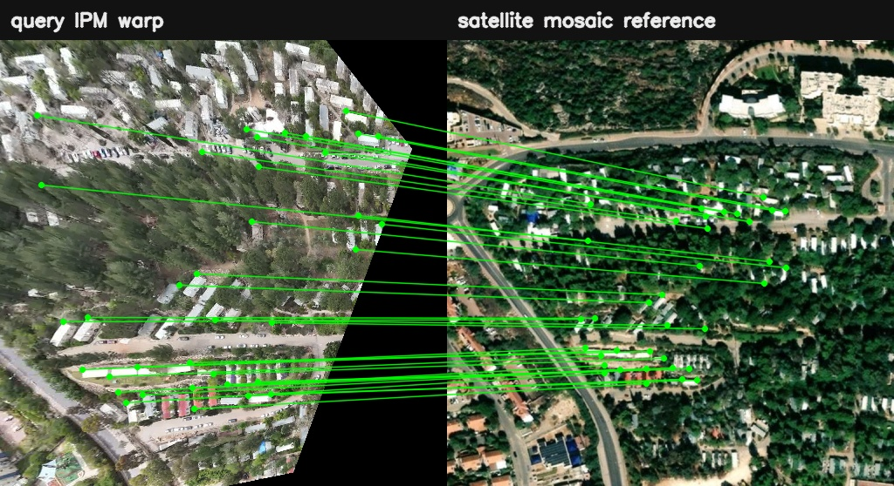
| frame_count | 3208 |
|---|---|
| error_m | 33.853 |
| source | SAT |
| accepted_reason | Accepted by SAT stage because satellite matching returned sat_status=ok after homography/RANSAC. |
| sat_status | ok |
| sat_inliers_original | 34 |
| vpr_triggered | False |
| vpr_best_inliers_original | 0 |
| vpr_best_ratio_original | 0.0 |
| debug_type | SAT |
| reference_image | satellite mosaic |
| reference_source | data/satellite mosaic |
| reference_frame | |
| reference_path | |
| raw_matches_recomputed | 89 |
| ransac_inliers_recomputed | 36 |
| inlier_ratio_recomputed | 0.404 |
| drawn_lines | 36 |
| start_seconds | 107.006 |
| frame_path | data\processed\frames_v17_1fps\frame_000108.jpg |
| rel_alt_m | 119.8 |
| heading_deg | 290.1003761100884 |
| gt_lat | 32.10488285 |
| gt_lon | 35.20401695 |
| smoothed_lat | 32.10505897 |
| smoothed_lon | 35.20372427 |
| raw_final_lat | 32.10506 |
| raw_final_lon | 35.203693 |
| recomputed_lat | 32.105064 |
| recomputed_lon | 35.203697 |